1.ザよこはまパレード（正式名称：開港記念みなと祭 国際仮装行列）
Q.1953年の第1回目〜2024年の第72回目の現在までで今も変わらないものはなんですか？
第1回目（1953年）

※１ 画像参照
第72回目（2024年）
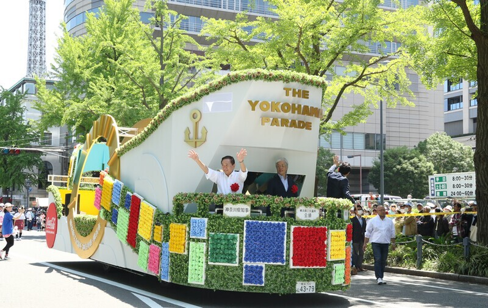
※２ 画像参照
2.横浜ベイブリッジ計画のスタート（1970年代後半）
Q.横浜ベイブリッジ計画についって当時の人々はどのような感想を抱いていましたか？また、どのような感想を抱きましたか
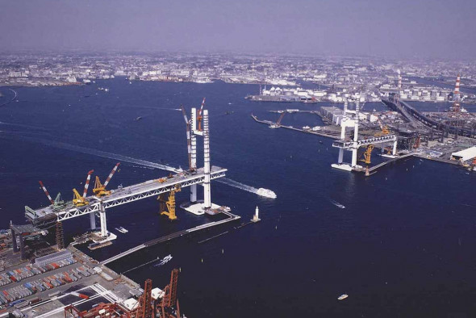
※３ 画像参照
3.横浜ベイブリッジ開通（1989年）
Q.実際に横浜ベイブリッジが開通してどう思いましたか。また、世間の反応はどうでしたか？

4.みなとみらい21計画
Q.この計画でできた建物や施設で特に印象に残っているものはなんですか？また、その理由はなんですか？
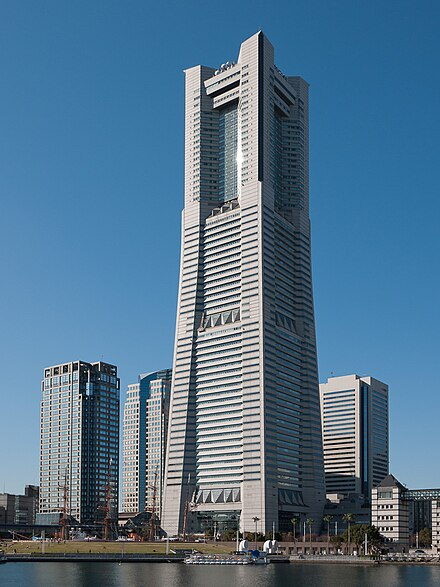
_1.jpg) 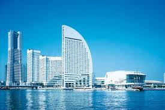
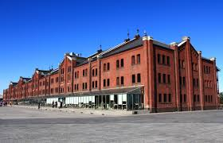
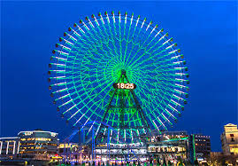
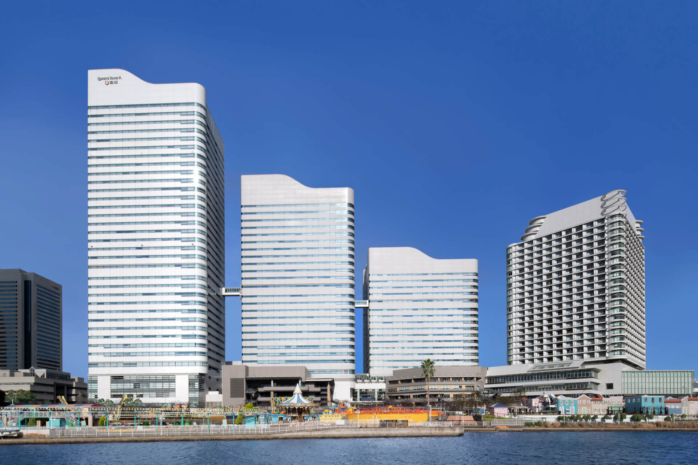
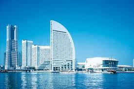
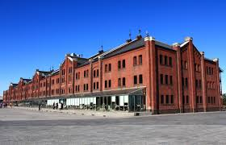
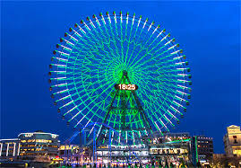
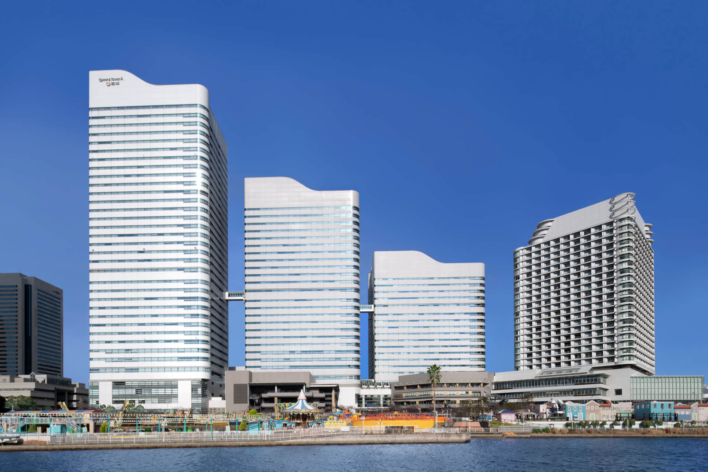
5.横浜ランドマークタワーの着工（1990年）+完成（1993年）
Q.ランドマークタワーが建てられる事になった背景についてどうお考えですか？また、完成後のランドマークタワーは人々の暮らしにどのような影響を及ぼしましたか？
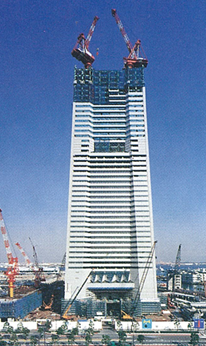
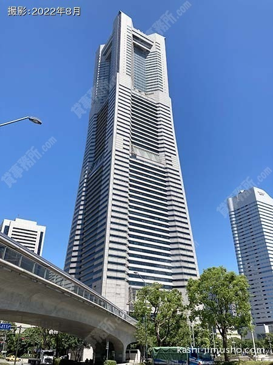
※４ 画像参照
参考文献
・開港記念みなと祭 国際仮装行列 （※１ 画像参照）
パレードの歴史
・総勢60団体およそ2600名が参加 「第72回ザよこはまパレード（国際仮装行列）」5月3日開催 （※２ 画像参照）
横浜Walker
・横浜ベイブリッジ開通３５年 渋滞緩和のための建設、今は横浜のシンボルに（※３ 画像参照）
カナロコ
・横浜ベイブリッジ
ウィキペディア
・ウオーターフロントを結ぶ横浜ベイブリッジ開通＿広告特集
日経新聞クロスリサーチ
横浜ランドマークタワー( みなとみらい・桜木町)の賃貸・空室情報（※４ 画像参照）
横浜貸事務所.com